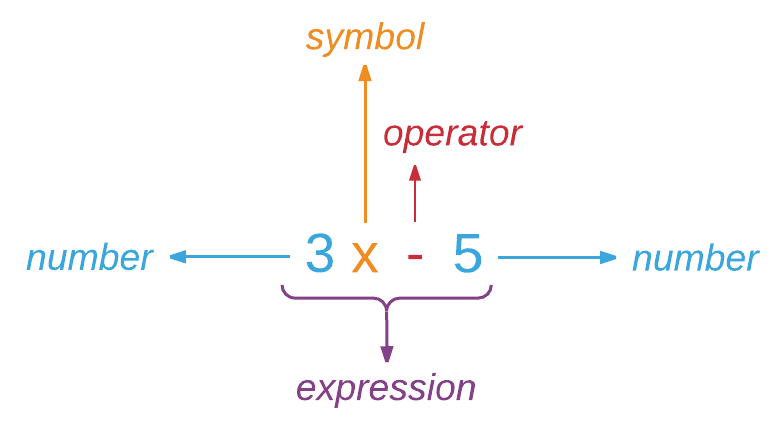
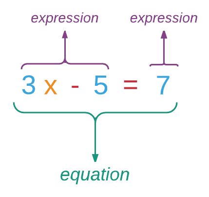

Předtím, než se pokusíme porozumět, čím je výraz v Elmu, pohleďme na jeho definici ve Wikipedii. Výraz kombinuje čísla, symboly a operátory pro výpočet hodnoty. Zde je příklad:

Výše uvedený výraz může byt vyhodnocen na nějakou hodnotu v závislosti na hodnotě, kterou zastupuje x. Protože x je proměnná, bude se hodnota výrazu měnit v závislosti na hodnotě proměnné x.
Výrazem může být i kombinace výrazů, jak ilustruje následující obrázek:

Levá strana rovnice musí být vyhodnocena na hodnotu 7, z čehož lze odvodit, že x musí mít hodnotu: 4. Všimněte si, že jsme sedmičku na pravé straně rovněž označili za výraz (který není dále vyhodnocován). Všechno, co se vyhodnotí (redukuje) na hodnotu, je výrazem.
S touto základní znalostí o výrazech, proměnných a rovnicích obraťme naši pozornost zpět k Elmu. Každý řádek kódu, který jsme dosud zapsali v replu, je výrazem, který se vyhodnotí na hodnotu. Pokud v replu zapíšeme pouhé číslo bez operátoru, považuje jej Elm za výraz a pokouší se jej vyhodnotit. Protože číslo (jako každý literál) je zároveň znakem i hodnotou, nemusí jej Elm vyhodnocovat.
> 42
42
> 5
5